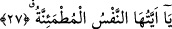

25-26. Artık o gün, Allah’ın edeceği azabı kimse edemez. O’nun vuracağı bağı
kimse vuramaz.
“Artık” zikredilen bu durumların ve sözlerin gerçekleştiği “o gün O’nun edeceği
azabı kimse edemez. O’nun vuracağı bağı kimse vuramaz.”
“O” zamiri Allah Teâlâ’ya râcidir.
“Azâb” azab etme, “Visâk” bir şeyi zincir ve ip gibi bir bağ ile bağlamak demektir.
Zincirler ve demir halkalarla bağlayıp esir etmektir.
Yâni Allah’ın azabını ve bağlamasını O’ndan başka kimse üstlenemez. Çünkü o gün
bütün iş Allah’a âiddir. Bu ifâdeden kıyamet günü Allah’tan başka bir azab edici
bulunduğu mânâsı çıkmaz. Fakat hiç kimse O’nun azabı gibi azab edemez.
Aynu’l-maânî’de der ki: Hiç kimse dünyada Allah’ın âhiretteki azabı gibi azap
edemez.
“O” zamirinin insana râci olması da mümkündür. Yâni zebanilerden hiçbiri o insana
yaptıkları azab gibisini yapmazlar, demek olur.
Kisâî ve Ya‘kûb bu iki yeri meçhul olarak okumuşlardır. el-Keşşaf’ta bu kırâatın Hz.
Peygamber (s.a.)’in kırâatı olduğu ifâde edilmiştir. Ebû Amr’ın ömrünün sonunda bu
kırâata döndüğü nakledilmiştir. Buna göre mânâ şöyle olur: ‘İnsanın uğrayacağı azap
gibisi hiç kimseye yapılmaz.’ Bu durumda âyetin zâhir mânâsına göre insanın çekecek
olduğu azabın iblisin uğrayacak olduğu azaptan daha şiddetli olmasını gerektirir. Ancak
mü’minlerin âsîleri gibi insan cinsinden hiç kimsenin böyle bir azâba dûçar
olmayacağının kasdedildiği söylenirse o başka. Allah’tan her iki dünyada selamet ve
âfiyet dileriz.
27. Ey huzura kavuşmuş nefis!
Allah nefs-i emmârenin bedbahtlığını zikrettikten sonra şimdi nefs-i mutmainnenin
hoşbahtlığını beyâna başlıyor.
“İtmi’nân” sıkıntı ve rahatsızlıktan sonraki sükûnet ve huzurdur. Nefsin sükûneti ancak
yakîn, ma‘rifet ve şuhûd/müşâhedede gayelerin gayesine ulaşmakla olur. “Bilesiniz ki,
kalpler ancak Allah’ı anmakla huzur bulur.” (er-Ra’d, 13/28) âyetinde Allah
Teâlâ’yı ma‘rifetle ve O’na ibâdeti çoğaltmakla nefsin itmi’nânının kazanılacağına
dikkat çekilmektedir. Nefis Allah’ı zikrederek itmi’nân makamına ulaştığında o nefsin
sâhibi tabîatla ilgili hükümlere ve beşeriyetle ilgili alâmetlere dönmekten emîn olarak